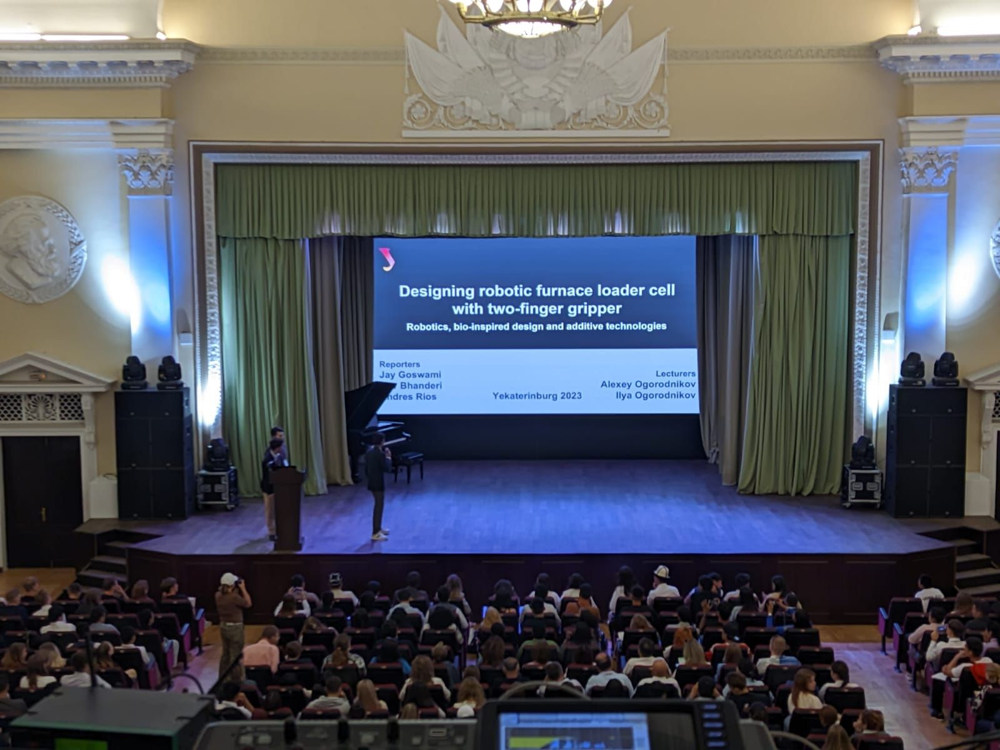
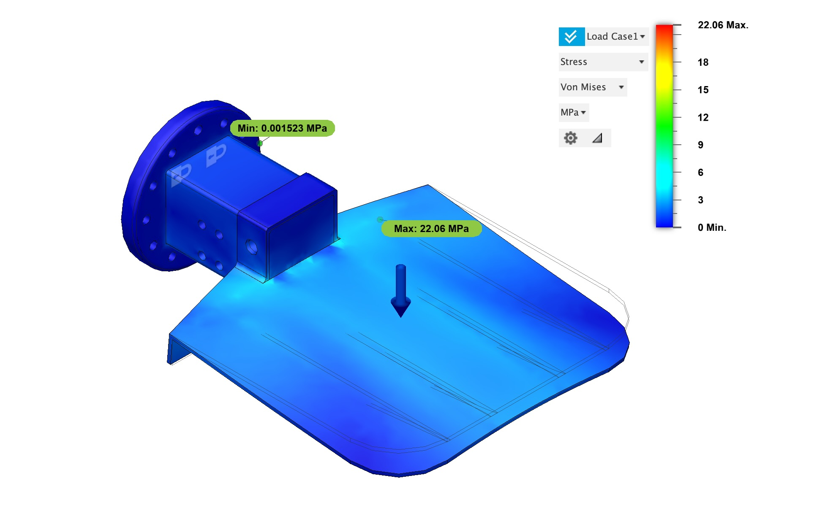
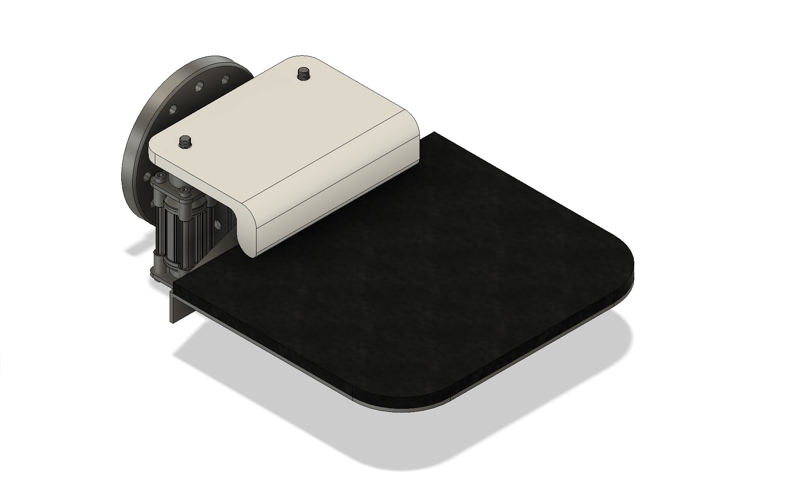

Bio-Inspired Robot Gripper.
A two-finger gripper for industrial cake production. FEM-validated, topology-optimized to drop 40% of its weight, and simulated on an ABB robotic arm.

UrFU, Russia
via topology optimization
FEM · ABB Robot Studio
The brief.
This came out of a 15-day student exchange at Ural Federal University in Russia. The first week was learning Russian CAD software and visiting local factories to see how robotic arms speed up production, plus hands-on training on ABB Robot Studio.
In the second week I designed a two-finger bio-inspired robot gripper for an ABB robotic arm. I ran Finite Element Method (FEM) analyses and used topology optimization to cut the gripper's weight by 40%. The design won the best-project award in the robotics category, which I will admit felt good for two weeks of work.
Process.
I started by sketching out a bio-inspired two-finger gripper aimed at industrial cake production and furnace loading.
- I designed it in Autodesk Fusion 360, then took it into Kompas 3D (Russian CAD) to make it lighter without losing function.
- I ran Finite Element Method (FEM) analyses to check it would hold up under load.
- To see how it would behave on a line, I modeled the assembly process in ABB Robot Studio and planned out the robot's moves.
- I tuned the grip for the cake industry, where you need to hold something gently but precisely (one bad squeeze and it is not cake anymore).
Build artifacts.


